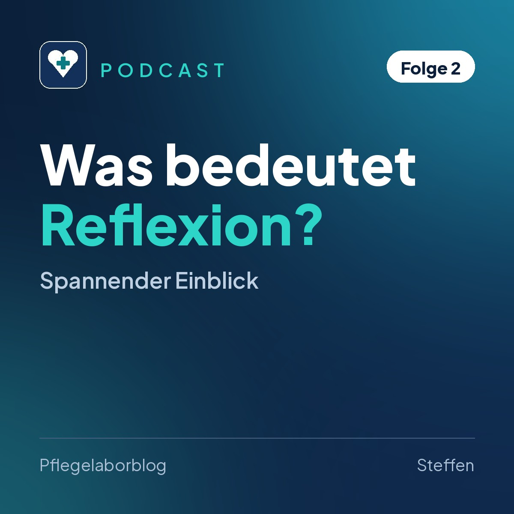
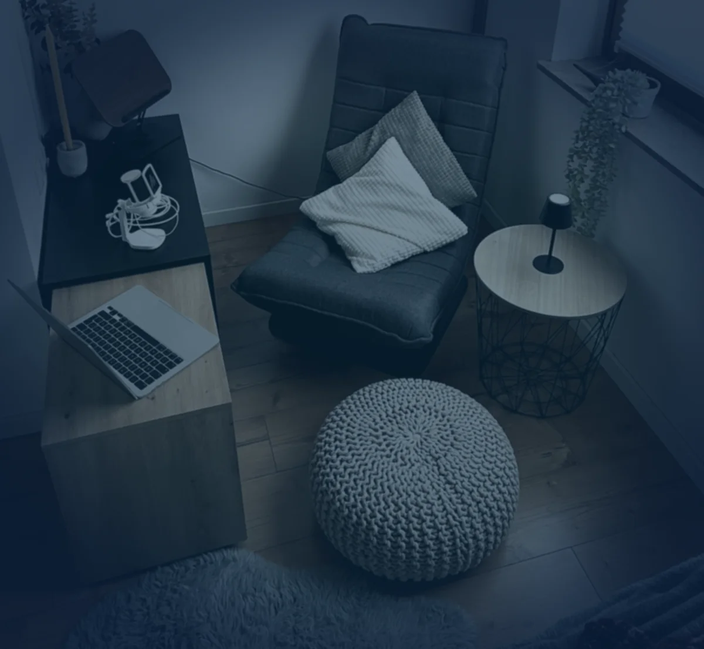

Podcast
Zum Hören
Ausgewählte Themen aus dem Blog auch zum Hören, zum Beispiel auf dem Weg zur Schule oder zum Dienst.

Selbstreflexion in der Pflege: Drei Modelle für den Alltag
In dieser Folge geht es um Selbstreflexion (das kritische Nachdenken über das eigene Handeln, Denken und Fühlen) in der Pflege. Ich erzähle, warum sie für meine Ausbildung so wichtig ist, wie ich Reflexion vom Grübeln (kreisendes Nachdenken ohne Ergebnis) unterscheide und wie ich Situationen nachbereite. Dazu stelle ich drei Reflexionsmodelle (feste Schemata, die die Denkschritte vorgeben) für den Alltag vor. Die Beispiele in der Folge sind ausgedacht.
- Driscoll: drei Fragen für einen kurzen Rückblick im Alltag.
- Gibbs: ein Zyklus in mehreren Schritten für belastende Erlebnisse.
- Johns: eine vertiefte Reflexion, zum Beispiel gemeinsam mit der Praxisanleitung (Fachkraft, die Auszubildende im Einsatz begleitet).
- Außerdem: fachlich begründetes Handeln, Perspektivwechsel (die Sichtweise des Gegenübers einnehmen), Selbstfürsorge (Fürsorge für die eigene Gesundheit) und die Unterstützung durch andere.
Mit dem Klick wird der Player von Podigee geladen. Dabei werden Daten an Podigee übertragen, mehr dazu in der Datenschutzerklärung. Folge direkt bei Podigee anhören

Von der Industrie in die Pflege: Mein Weg zur Ausbildung
Der Wechsel von der Industrie in die Pflege hat mir eine Arbeit gegeben, die mich erfüllt. In dieser ersten Folge stelle ich mich vor: Ich bin Steffen und mache nach mehreren Jahren als Pflegehilfskraft die Ausbildung zum Pflegefachmann. Ich erzähle von meinem beruflichen Weg, meinen ersten Eindrücken aus der Pflegeschule und davon, warum Theorie, Praxis und Reflexion für mein Lernen zusammengehören. Außerdem gebe ich einen Ausblick auf die Themen, die euch im Podcast erwarten, ehrlich und ohne den Pflegealltag schönzureden.
- Mein beruflicher Hintergrund: Bundeswehr, Industrie und Servicetechnik, und warum ich schließlich in die Pflege gewechselt bin.
- Was mir die Arbeit mit Menschen bedeutet und warum ich mich für die Ausbildung zum Pflegefachmann entschieden habe.
- Erste Eindrücke aus der Pflegeschule und die Unterschiede zu meinen früheren Schulerfahrungen.
- Mein Blick auf das Lernen: Eigeninitiative, Theorie in der Praxis anwenden, aus Fehlern lernen und reflektieren.
Mit dem Klick wird der Player von Podigee geladen. Dabei werden Daten an Podigee übertragen, mehr dazu in der Datenschutzerklärung. Folge direkt bei Podigee anhören
Bewohner, Mitarbeitende, Arbeitgeber und Schule bleiben ungenannt. Rückmeldungen oder Lust, bei einer Folge mitzumachen? Schreib mir an vollmer.steffen@icloud.com mit dem Betreff Pflegelaborblog.
